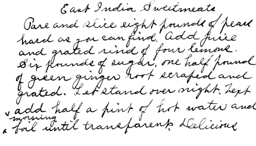

How To Make Candies. Continued
Description
This section is from the book "Cook Book", by The Ladies of the Church of the Good Shepherd.
How To Make Candies. Continued
Chocolate Creams
Dust the moulding board with the least bit of flour, roll the cream on it, then cut in small pieces and form into balls between the palms of the hands and set on parafine paper to harden. It is better to do this part the day before you fix the chocolate, as they will be firmer. Put a cake of Huyler chocolate in a pan (set in another of boiling water) to melt. When melted cut into it a piece of parafine the size of a small hickory nut and a piece of butter half as large, add a few drops of vanilla. Roll the creams in the melted chocolate and set on parafine paper to harden. A fork or large hat pin is convenient to dip them with. Now for that which is tinted pink, first form into nice round balls the size of a twenty-five cent piece, and press into the top of each a blanched almond, then roll in granulated sugar; they are very pretty. A part of the cream may be tinted chocolate by kneading in grated chocolate.
Fruit Or Wedding Cake Candy
Seed and chop raisins, figs, citron, almonds, hickory nuts, English walnuts, cocanut (shredded), dates, and knead into some of the plain cream. Roll out a layer of the white cream about half an inch thick, then put a layer of the pink on that, then a layer of the fruit, then pink again, being careful that it reaches over the side to the other layer of pink, then the white again to reach over to the other layer of wThite. Roll in the melted chocolate and lay on parafine paper to harden. When hard slice across as you would a loaf of bread and you will be surprised to see how delicious the wedding cake is.
Vanilla Caramels
Four cups of granulated sugar, three tablespoonfuls of glucose, one cup of water. Boil, stirring most of the time, until it will harden when dropped in cold water. Then add immediately one cup of rich cream and butter the size of an egg. Let it boil again till it will harden in cold water, when remove from the stove and flavor to taste. Pour out into a buttered pan so that it will be three-quarters of an inch thick. Let it cool, cut in square blocks and wrap in parafine paper. The paper should be cut in squares two by three inches and kept ready. When the above caramel recipe has been mastered it is easy to make a great variety by using different flavorings.
Chocolate Caramels
Same as above, only adding one-fourth pound of Huyler's chocolate grated fine with the cream and butter.
Nut Caramels
Same as vanilla, only adding two cups of hickory nuts just before removing from the stove. These are delicious.
Cocoanut Caramels
After the caramel is poured out, sprinkle desicated cocoa-nut thickly over the top or what is nicer grate a fresh cocoanut and sprinkle over it. M. D. Greene.
Cocoanut Candy
One cupful of sugar, one cupful of molasses, two table-spoonfuls of butter boiled until it forms a soft ball in water. Let it cool a little and stir it thick with cocoanut, make into balls and stand on paraffine paper.
Cream Taffy
Three cups granulated sugar, one-half cup of vinegar, one-half cup of water, butter size of a walnut, boil without stirring until it will candy when dropped in cold water. Flavor and pour out on a buttered dish. When cool pull till white, then cut in sticks with sharp scissors.
Walnut Macaroons
One cup of chopped nuts, one egg, one cup of sugar^ three tablespoonfuls of flour. Drop on buttered pans in very small quantity and bake in a quick oven. Mary D. Greene.

Continue to: